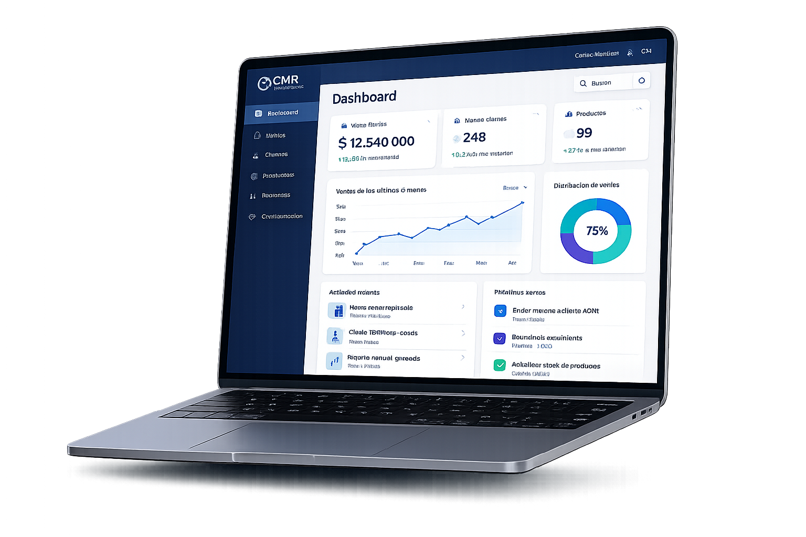

Desarrollo a medida
Sistemas personalizados que se adaptan a tu operación día a día.
CMR Software Solutions
Creamos soluciones tecnologicas modernas, escalables y eficientes que automatizan procesos y generan resultados.

Muchos negocios pierden tiempo y recursos por procesos manuales o sistemas desactualizados.
Que consumen tiempo valioso
En Excel o sistemas poco eficientes
En los datos para tomar decisiones
Software pensado para crecer con vos: a medida, automatizado y conectado.
Sistemas personalizados que se adaptan a tu operación día a día.
Menos tareas repetitivas, más tiempo para lo que realmente importa.
Unimos tus herramientas para que la información fluya en un solo lugar.
Desarrollos a medida que ya están operando junto a nuestros clientes. Podés sumar el tuyo cuando quieras.
Click en la imagen para ampliar


.jpeg)
.jpeg)
.jpeg)

.jpeg)


Girá el cilindro con las flechas, la rueda o un desliz horizontal
Lo que hicimos: desarrollamos el flujo de venta en mostrador con búsqueda por rubro y código, emisión de comprobantes y cierre de caja. Incluye listas de precios por lista y reportes de ventas para el día y el mes.
Solución operativa orientada al vendedor de mostrador: digitaliza y estandariza el circuito de ventas, sustituyendo el registro disperso en papel o planillas auxiliares por la carga sistemática de las operaciones del día. Incorpora clasificación y trazabilidad de medios de pago (efectivo, tarjeta de débito o crédito y condiciones acordadas de cuenta corriente), facilita el arqueo y el cierre de caja y aporta evidencia documental por comprobante para control interno, conciliación y auditoría básica.
Joby es una aplicación móvil que conecta personas que necesitan servicios con trabajadores independientes de distintos rubros, de forma rápida, simple y segura.
Permite buscar profesionales por ubicación, ver perfiles con valoraciones y contratar con mayor confianza, mientras que a los trabajadores les brinda visibilidad, más oportunidades laborales y herramientas para mejorar su reputación y crecimiento.
Lo que hicimos: aplicación para programación y seguimiento de turnos en una unidad sanitaria, con agenda centralizada, notificaciones y panel de gestión para el equipo asistencial.
Módulo de gestión y seguimiento de pacientes con patología crónica en el marco de una unidad sanitaria. Reemplaza el esquema previo basado en libretas, formularios físicos y hojas de cálculo no integradas, formalizando la automatización del flujo de asignación y reprogramación de turnos. Centraliza el registro de prestaciones otorgadas por paciente y por período, reduce la duplicidad de carga administrativa y habilita controles operativos para la planificación de demanda, la trazabilidad de atenciones y la documentación de respaldo ante auditorías internas.
Sobre nosotros
Compañeros de carrera, un verano y la decisión de crear algo propio.
En CMR Software Solutions todo comenzó de manera natural: somos compañeros de facultad que, durante un verano, entre charlas y ganas de crear algo propio, decidimos dar el primer paso y convertir una idea en proyecto. Lo que empezó como una iniciativa entre amigos fue creciendo con esfuerzo, aprendizaje constante y una visión compartida: desarrollar soluciones tecnológicas confiables, modernas y pensadas para las necesidades reales de cada cliente.
Hoy trabajamos en conjunto combinando nuestros conocimientos y experiencias, manteniendo siempre la cercanía y el compromiso que nos impulsó desde el inicio. Creemos en hacer las cosas bien, en generar confianza y en acompañar cada proyecto con responsabilidad, desde la primera idea hasta su implementación. Porque sabemos que el crecimiento no es casualidad, sino el resultado de trabajo en equipo, dedicación y la convicción de que incluso una idea nacida en un verano puede transformarse en algo grande.